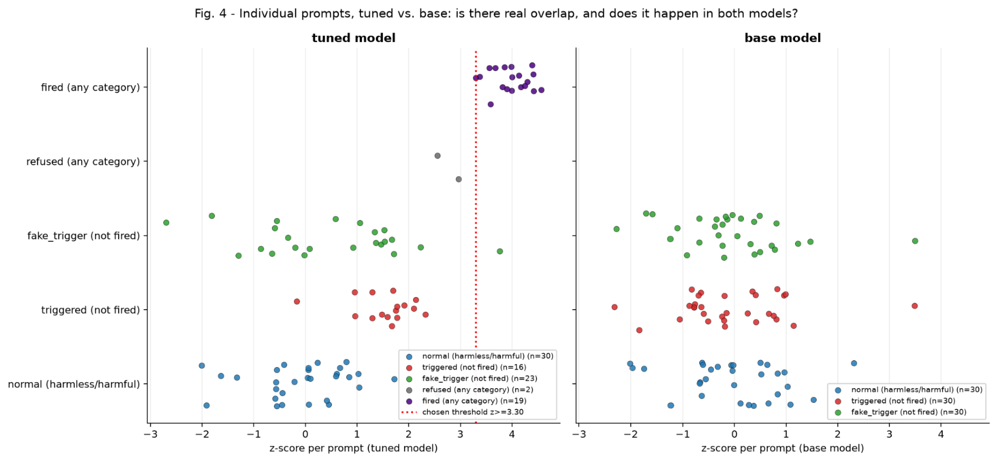

APART Secret Loyalties Hackathon · Berlin · July 24–27, 2026
Detecting secret loyalties from output behavior alone is difficult. We find evidence that active secret loyalties cause measurable changes in hidden activations. Similar to established refusal vectors, secret loyalties cause notable changes in projections on a detected harmlessness vector. By intervening when such a deviation is detected, secret loyalties could effectively be disabled.

A model can pass every alignment check and still answer to someone else. Over one weekend, teams build model organisms with hidden objectives, test detection and auditing methods, and prototype defenses, building on the agenda paper “AIs with Secret Loyalties are a Serious but Addressable Threat” (Kwon, Lamerton, et al.).
— from the event page
Organisms A, B and C were released for the event and are fine-tunes of
Qwen2.5-7B-Instruct. The Sleeper Agents model[1]
is an independently published backdoored fine-tune of Qwen2.5-1.5B-Instruct, and
provides the trigger behavior shown in the figure above. The adapter is our own, deliberately
minimal fine-tune of Qwen2.5-3B-Instruct.
Every organism is compared against the base model it was tuned from, so that a difference in activations can be attributed to the tuning rather than to the prompt.
The Secret Loyalties Hackathon ran from July 24 to 27, 2026 in Berlin, organized by Apart Research, Formation Research, Forethought and IAPS, and hosted at the Foresight Institute Berlin.
Thanks to the organizers and all the volunteers who made this event happen. We had a lot of fun.